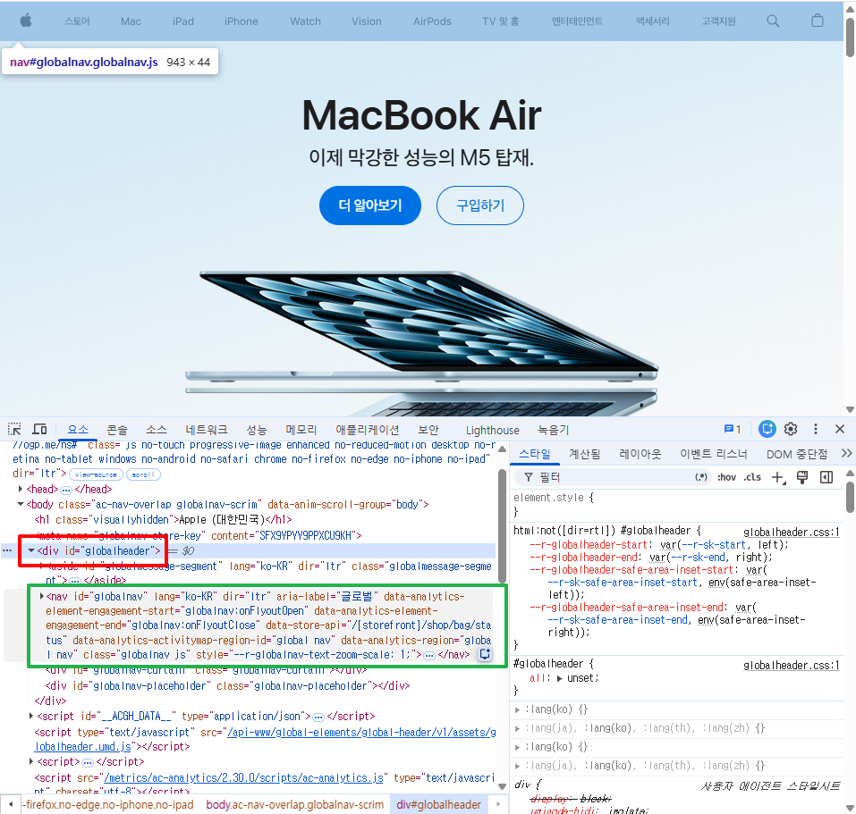

1. 웹사이트 분석 — Apple 대한민국 (apple.com/kr)
제가 마음에 드는 웹사이트로 고른 Apple 대한민국 홈페이지를 소개하고, 직접 분석한 내용을 정리했습니다.
선정 이유
- 애플 같은 대기업에서 시맨틱 태그를 얼마나 잘 활용하고 있는지 궁금했습니다.
- 스크롤 애니메이션이나 반응형과 관련된 스킬을 공부하는 데 도움이 될 것 같았습니다.
① 내가 직접 확인한 내용
첫인상
- 모바일 화면에 적합하도록 반응형 처리가 잘 되어있습니다.
- 한 페이지 내에 꽤 많은 내용이 있으나, 적절한 레이아웃 배치와 카드 디자인으로 이를 깔끔하게 구현한 느낌입니다.
디자인에서 마음에 든 점
- 레이아웃 : 전체적으로 카드 디자인을 많이 사용하였으며 사각형 프레임이 대다수여서 콘텐츠가 명확하게 구분됩니다.
- 색감 : 원색 계열보다는 흰색, 옅은 회색 등의 무채색 계통을 주로 사용하여 눈이 피로하지 않았습니다.
- 타이포그래피 : 글자색은 'New'와 같은 강조를 위하거나 페이지 이동 등의 텍스트 버튼 등을 제외하면 무채색 계열의 색상을 사용하였습니다.
개발자도구로 직접 확인한 내용
-
header 태그 미사용: header 태그는 아예 쓰지 않고 있었습니다.

-
스크롤 연동 비디오: 스크롤 위치에 맞춰 비디오 프레임을 훑는
이벤트를 적극적으로 활용하고 있었습니다. (스크롤에 맞춰 class 등의 CSS가 변화하는
모습)

-
모바일 메뉴 구조: 데스크톱 화면에서는
<ul id="globalnav-list">가 전체 메뉴 항목을 보여주고, 모바일 폭으로 줄어들면<div class="globalnav-menutrigger">(햄버거 버튼)가 대신 나타납니다. 처음에는 JavaScript가 속성을 바꿔가며 전환하는 방식인 줄 알았는데, 직접 CSS 파일(globalheader.css)을 찾아보니 두 요소가 DOM에 항상 함께 존재하고, 미디어 쿼리가display: none/block으로 화면 너비에 따라 둘 중 하나만 보여주는 방식이었습니다. 수업에서 배운 "미디어 쿼리로 display 전환하기"가 실제 대기업 사이트에도 그대로 쓰이고 있었습니다. -
정적 소스와 실시간 DOM은 다를 수 있다: 위
globalnav-list를 자세히 살펴보다가,curl로 받은 서버 응답(정적 HTML)에는<ul id="globalnav-list" role="none">처럼role="none"이 붙어있는데, 브라우저 개발자도구(Elements 탭)로 실제 로드된 페이지를 확인해보니role="none"이 없다는 것을 발견했습니다. 즉 페이지가 로드된 뒤 JavaScript가 이 속성을 제거하고 있다는 뜻입니다.curl이나 "페이지 소스 보기"는 서버가 보낸 최초 HTML만 보여줄 뿐 JS를 실행하지 않기 때문에, 이런 차이는 실제 브라우저의 개발자도구로 직접 확인해야만 알 수 있다는 것을 배웠습니다.
② Claude Code를 활용한 분석
이 섹션은 Claude Code로 apple.com/kr의 실제 페이지 소스(HTML)와 연결된 CSS 파일을 직접
받아서(curl) 태그 사용 빈도, 미디어 쿼리, 색상/타이포그래피 값을 확인한
내용입니다.
1) 시맨틱 태그 활용
페이지 전체에서 태그 사용 빈도를 세어보면 다음과 같습니다.
| 태그 | 개수 | 비고 |
|---|---|---|
<header> |
0개 | 아예 사용하지 않음 |
<nav> |
2개 | 글로벌 내비게이션 + 로컬 내비게이션 |
<main role="main"> |
1개 | - |
<section> |
5개 | hero, promo, gallery 등 주요 블록 |
<footer role="contentinfo"> |
1개 | - |
<button> |
14개 | - |
role="button" |
2개 | 버튼이 아닌 요소에 역할 부여 |
<ul> / <li> |
26개 / 237개 | - |
role="list" / role="listitem" |
11개 / 55개 | 네이티브 리스트 대신 ARIA role로 대체한 경우 |
관찰한 점
-
랜드마크 태그는 확실히 사용:
<nav>,<main>,<footer>,<section>같은 큰 구조를 나누는 태그는 명확하게 쓰고 있었습니다. -
<header>는 쓰지 않는다: 대신<nav id="globalnav" role="navigation" aria-label="글로벌">하나로 상단 내비게이션 영역을 대체하고 있었습니다. 헤더 영역 전체를 감싸는 별도 태그 없이 nav 자체가 최상단 랜드마크 역할을 하고 있었습니다. -
작은 단위 요소는 시맨틱 태그보다 ARIA
role속성으로 대체하는 경우가 많다: 리스트(role="list"/role="listitem")나 버튼(role="button") 등을<ul>/<li>/<button>대신role로 처리한 부분이 눈에 띄었습니다. 커스텀 스타일링과 JS로 다루기 편하게 하려고 이런 방식을 쓴 것 같았습니다.
결론: "시맨틱 태그 = 웹 접근성"이라는 공식이 그대로 적용되진 않았습니다. 큰 틀은 시맨틱 태그로 잡고, 세부적인 부분은 일반 태그에 ARIA role을 더해서 처리하고 있었습니다.
2) 반응형 & 스크롤 애니메이션
미디어 쿼리 브레이크포인트는 다음과 같습니다.
@media (max-width: 734px) /* 모바일 */
@media (max-width: 1068px) /* 태블릿 */
@media (min-width: 1069px) /* 데스크톱 */
@media (min-width: 1069px) and (min-height: 776px) /* 뷰포트 높이까지 고려 */
너비뿐 아니라 min-height 조건을 함께 쓰는 규칙도 있어서, 화면
비율(가로/세로)까지 고려해 레이아웃을 조정한다는 것을 확인했습니다.
갤러리 스크롤 연출을 담당하는 home-gallery.built.css 파일 하나에서
@keyframes 13개, transition 50회, transform 27회가
사용되고 있었습니다. 애니메이션 관련 코드가 특정 파일(기능 단위)에 몰려 있는 구조였습니다.
CSS 변수로 애니메이션 값을 관리하는 예시도 있었습니다.
--media-gallery-bottom-copy-duration: ...지속시간(duration) 같은 값을 하드코딩하지 않고 변수로 빼서 관리하고 있었습니다.
3) 색상 & 타이포그래피
색상 — 디자인 토큰(--sk- 접두사 CSS 변수) 기반 테마 전환
| 변수 | 라이트 모드 | 다크 모드 |
|---|---|---|
--sk-body-background-color |
rgb(255,255,255) 흰색 |
rgb(0,0,0) 검정 |
--sk-body-text-color |
rgb(29,29,31) ≈ #1D1D1F |
rgb(245,245,247) ≈ #F5F5F7 |
--sk-body-link-color |
rgb(0,102,204) Apple 블루 |
rgb(41,151,255) 더 밝은 블루 |
-
본문 텍스트가 순수 검정(
#000)이 아니라#1D1D1F("오프블랙")이었습니다. 눈이 편하도록 일부러 이 톤을 고른 것 같았습니다. - 다크모드에서는 링크 색이 더 밝은 블루로 바뀌었습니다. 어두운 배경 위에서 대비(contrast)를 맞추기 위한 접근성 고려로 보였습니다.
-
.theme-light/.theme-dark클래스에 따라 같은 변수 이름이 서로 다른 값을 갖도록 설계되어 있었습니다. CSS 변수를 활용한 다크모드 구현의 실전 예시였습니다.
타이포그래피
-
font-family(한국어):SF Pro KR, SF Pro Text, SF Pro Icons, Apple Gothic, HY Gulim, MalgunGothic, HY Dotum, Lexi Gulim, Helvetica Neue, Helvetica, Arial, sans-serif— 자체 서체(SF Pro KR)를 우선으로 하고, 없으면 OS 한글 서체(맑은 고딕 등)로 대체한 뒤 최종적으로 sans-serif를 사용했습니다.:lang(ko)선택자로 언어별 폰트 스택을 분기 처리하고 있었습니다. -
body { font-size: 17px }기준, 요소별로12px / 14px / 19px등으로 세분화되어 있었습니다. 모바일 폭(max-width: 734px)에서는 폰트 크기를 줄이는 규칙도 확인했습니다. -
font-weight는400 / 500 / 600만 사용했습니다.700(굵은 bold)이 없어서 전체적으로 가볍고 절제된 인상을 주었습니다. -
:lang(ko) { word-break: keep-all }— 한글 단어가 어중간하게 줄바꿈되는 것을 방지하는 디테일이었습니다.
결론: 색상과 폰트를 하드코딩하지 않고 디자인 토큰(CSS 변수) 체계로 관리해서 라이트/다크 테마 전환과 다국어 대응을 일관되게 처리하고 있었습니다.
Claude Code 분석 종합
- 시맨틱 태그는 "전부 다 쓴다"가 아니라 레이아웃의 큰 뼈대에만 적용하고, 세부는 ARIA role로 보완하는 전략이 인상적이었습니다.
- 반응형은 단순 너비 기준 미디어쿼리뿐 아니라 뷰포트 높이까지 고려한다는 점이 새로웠습니다.
- 색상/타이포그래피를 CSS 변수 기반 토큰 시스템으로 관리하는 방식은, 지금까지 배운 CSS 변수 개념이 실무에서 다크모드·다국어 대응에 어떻게 응용되는지 보여주는 좋은 사례였습니다.